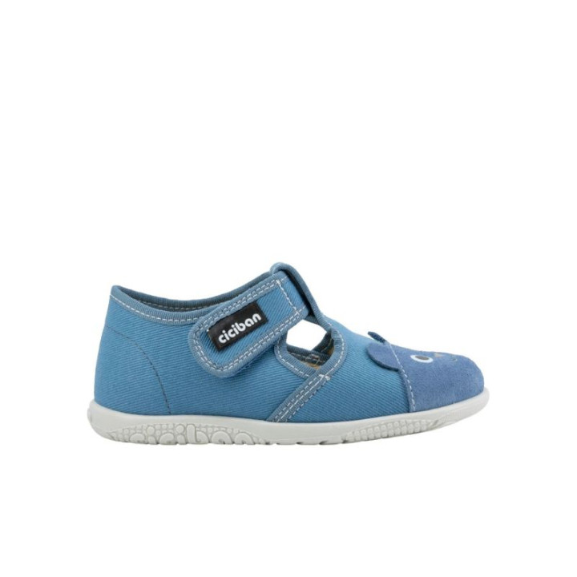
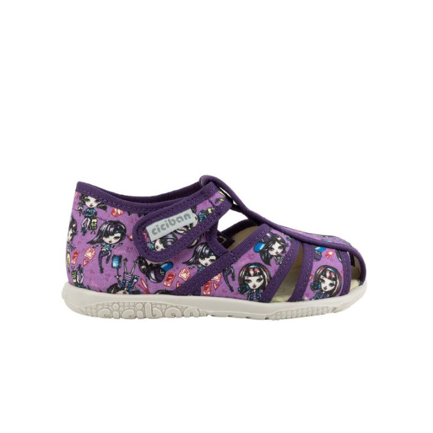

Papuče Ciciban: proč je děti milují a rodiče kupují znovu
12. 9. 2026
Papuče jsou pro dětskou nohu nejdůležitější boty. Doma v nich děti tráví nejvíc času, a přesto se na ně často zapomíná. Právě tady se láme zdravý vývoj chodidla. Papuče Ciciban si rodiče oblíbili proto, že tohle vědí a dělají to poctivě.

Zdravá noha potřebuje volnost
Dětské chodidlo roste a mění tvar. Kosti ještě nejsou pevné, klenba se teprve tvoří. Pokud noha celý den sedí v úzké botě, nemá šanci se správně vyvinout.
Papuče Ciciban mají prostornou špičku. Prsty se v nich mohou volně roztáhnout a pracovat. To je přesně to, co rostoucí noha potřebuje.
Podívejte se na nabídku bačkůrek pro nejmenší i starší děti.
Dýchají a nekloužou
Doma je teplo, dítě běhá, noha se potí. Materiál proto musí dýchat. Ciciban na to myslí u všech modelů.
- Přírodní materiály udrží nohu v suchu po celý den.
- Kůže a textil se přizpůsobí tvaru chodidla.
- Dostatečně tuhá podrážka ochrání nohu před ostrými hračkami.
- Pružná protiskluzová podrážka zabrání pádům na hladké podlaze.
Dítě si jich proto často ani nevšimne. Prostě je má na sobě a běhá.
Děti si je obouvají samy
Rodiče ocení praktické detaily. Suchý zip nebo pružný lem zvládne i tříleté dítě samo. Rychlé obutí znamená méně dohadování a méně pláče.
Suchý zip navíc umožní nastavit obvod podle šířky nohy. A když noha povyroste, papuče pořád drží.
Stačí se podívat na bio pantofle a uvidíte, jak jednoduše se navlékají.
Drží na noze i při hře
Dítě doma neposedí. Skáče, běhá, tancuje. Papuče, které létají z nohy, jsou k ničemu.
Ciciban drží patu pevně a nepadá. Uzavřený tvar chrání prsty při zakopnutí. To se hodí, když se dítě prohání po bytě jako vichřice.
Správnou velikost změříte snadno doma. Pomůže vám k tomu měřidlo Plus12, které ukáže nadměrek i šířku.
Vydrží déle než sezona
Dětská noha vyroste klidně o dvě čísla za rok. Papuče proto nemusí být jen na jednu zimu. Kvalitní materiál a poctivé šití znamenají, že vydrží i druhé dítě.
Pravidlo je jednoduché. Nadměrek kolem 9 až 12 milimetrů, ne víc. Větší papuče noze nesedí a dítě v nich klopýtá.
Nohy měřte každé dva až tři měsíce. Růst je rychlý a boty nestačí sledovat jen na začátku sezony.
Co dělat, když noha vyroste mezi sezonami
Stává se to často. Papuče jsou najednou těsné a dítě si stěžuje. Řešení je jednoduché.
Zkontrolujte vložky do bot a stav podrážky. Když jsou papuče jinak v pořádku, stačí sáhnout po dalším čísle. Někdy pomůže i jiný model se stejnou velikostí, ale prostornější špičkou.
Shrnutí
Papuče Ciciban spojují to, co rodiče u dětské obuvi hledají. Zdravý tvar, pohodlí a praktické provedení. Děti je nosí rády, protože jim nic netlačí. Rodiče je kupují znovu, protože vědí, že dělají pro nohu to nejlepší.
Potřebujete poradit? Prohlédněte si celou nabídku dětské obuvi Ciciban. Zavolejte nám na +420 722 11 80 54 nebo napište na ciciban-cz@seznam.cz (Po-Pa 9:00-12:30, 13:00-18:00, So 9:00-12:00).